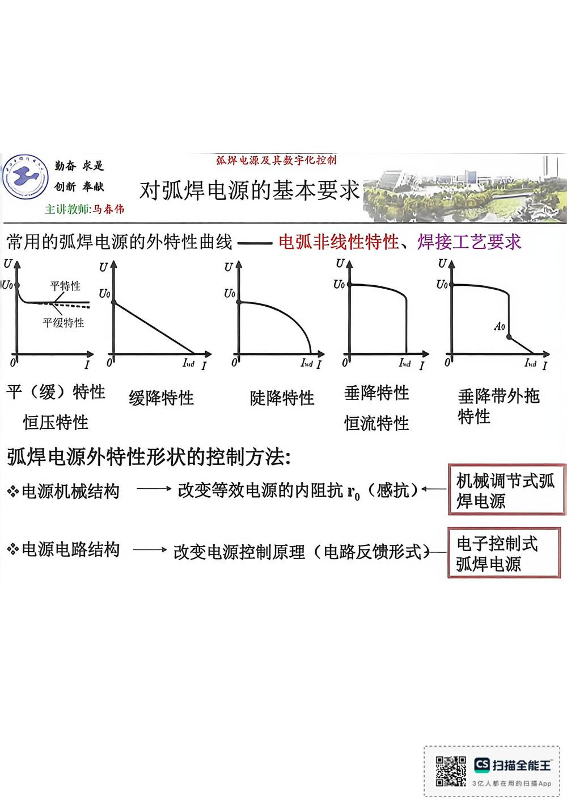

13 手写笔记/1~5周/h-w1-013 电源机械结构
h-w1-013 电源机械结构
📷 原图：
1~5周 焊接电源(1).pdf第 13 页（整页扫描，本库内嵌h-w1-013.jpg）
电源机械结构

本页文字（OCR 整理）
- 常用的弧焊电源外特性曲线——电弧非线性特性、焊接工艺要求
- 平级特性
- 平（缓）特性
- 缓降特性
- 陡降特性
- 恒压特性
- 垂降特性
- 恒流特性
- 电源机械结构
- ，改变等效电源的内阻抗”（感抗）←
- 垂降带外拖
- 电源电路结构▶改变电源控制原理（电路反馈形式》
- 机械调节式弧
- 电子控制式
本页重点（自动标记：含"定义/特点/要求/结论/公式"等，或与课件原句高度一致）
- 常用的弧焊电源外特性曲线——电弧非线性特性、焊接工艺要求
- ，改变等效电源的内阻抗”（感抗）←
- 电源电路结构▶改变电源控制原理（电路反馈形式》
OCR 说明
文字由 macOS Vision 识别手写体/翻拍页面得到，错字难免（如"弧"误识为"孤"）；重点标记据此推断，请以页图为准。
对应讲义页
关联
- ← 上一页 · 总览 · 下一页 →
- 讲义：00 第2章 基本电气特性 导航 · 概念：04 概念地图